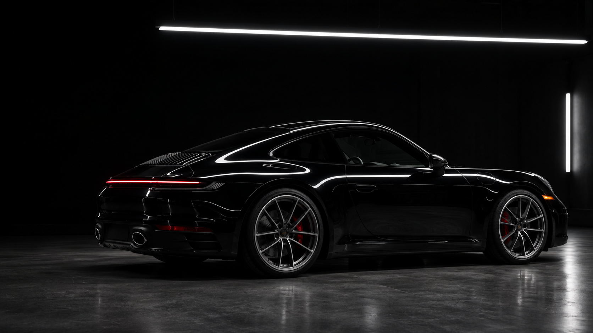
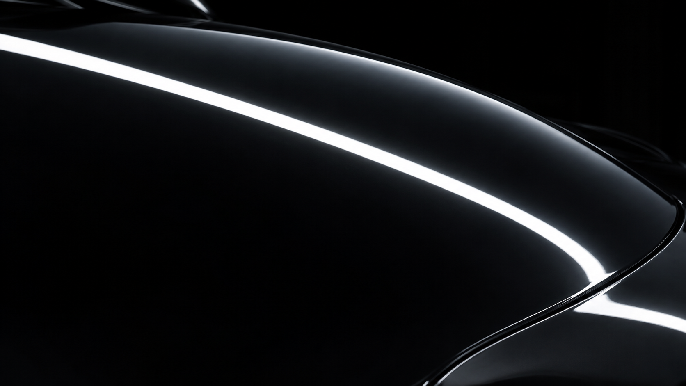

Сначала разобраться.
Проверяем кузов под направленным светом, оцениваем состояние салона. Обсуждаем ваши ожидания и объясняем, какой результат возможен.
Бережная оценка вместо лишних обещаний.
Детейлинг, который раскрывает
характер вашего автомобиля.
На хорошем лаке виден свет. На безупречном — только отражение.
NOIR — ателье ухода за кузовом и салоном. Мы начинаем с того, что обычно остаётся незамеченным. Микроцарапины. Мутные отражения. Следы времени. И шаг за шагом возвращаем поверхности ясность.
Увидеть разницуПроведите светом по поверхности.
Потяните круглый захват, чтобы сравнить результат.

Интерактивная визуализация. Дефекты смоделированы для демо.
Выберите направление.
Точный состав ухода определим после осмотра.
Ясность отражений.
Глубина цвета.
После восстановления важно сохранить результат. Керамический состав облегчает уход, а защитная плёнка помогает уберечь зоны риска от дорожного воздействия.
Обсудить защитуКузов, лак и салон
крупным планом.
Визуальная концепция NOIR. В галерее используются сгенерированные кадры и фотографии Unsplash.
Без спешки. Без случайных решений.
С пониманием каждого следующего шага.
Проверяем кузов под направленным светом, оцениваем состояние салона. Обсуждаем ваши ожидания и объясняем, какой результат возможен.
Бережная оценка вместо лишних обещаний.Согласуем услуги, материалы, стоимость и сроки. Подбираем профессиональные составы под поверхность и условия эксплуатации.
Индивидуальный уход. Понятная стоимость.Тщательно готовим поверхности, работаем по технологии и соблюдаем время выдержки. Работа по записи позволяет уделить автомобилю нужное внимание.
Подготовка важна так же, как финиш.Проверяем результат при направленном освещении, проводим осмотр вместе с вами и даём рекомендации по дальнейшему уходу.
Контроль результата до передачи ключей.Демонстрационный проект. Контакты студии пока не подключены.